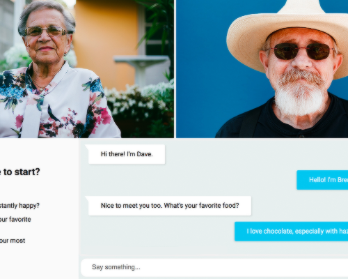
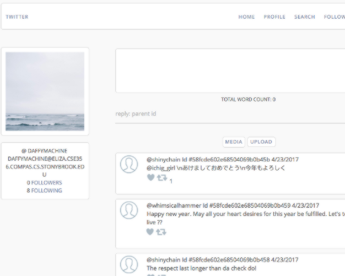
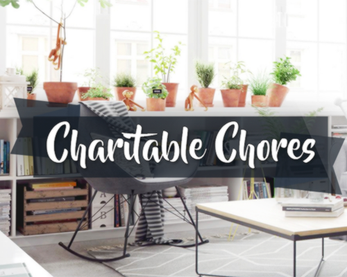
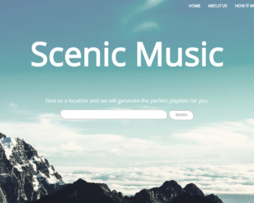
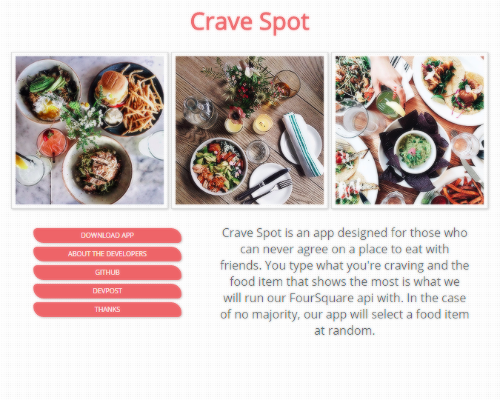

Hello, I'm Ruby Dong. I'm currently a senior pursuing my B.S. in Computer Science at Stony Brook. My passion for creating cool things has led me to love both coding and designing. When I'm not doing either of those, you might find me singing, playing piano, watching anime and kdramas, catching pokemon, and eating lots of food. If you share similar interests, don't hesitate to reach out to me!
FEATURED PROJECTS
|

Elder.lyA video chat system created at PennApps. This was designed with the elderly in mind, with the intention of helping them make new friends through this platform. All they would have to do is press one button to get connected with another. |

Twitter CloneA clone of twitter in functionality built for cloud computing course. It has twitter's major features such as tweeting (media supported), following, retweeting, and replies. |
|

Charitable ChoresA mobile app made for YHack, which incentivizes people to do nice things for others at little to no costs. Someone can request a task to be done and a donor would pay the person who completes it a trivial sum. This way, people would be motivated by kindness rather than greed. |

Scenic MusicA music recommendation service which came together at HackRPI that determines what playlist is right for the user based on the user's location. For instance, if someone is at the library, the user would be generated peaceful music to listen to. |

Pokemon BotAn artificial intelligence bot that deals with the battling aspect of Pokemon. Automated with selenium, it battles users in real time and chooses the best action to take to win them. |

Crave SpotCrave Spot is a mobile app created for HackNY which won the best PHP award. It takes the votes of a group of friends, then weighs into consideration everyone's preferences and decides where to eat. |